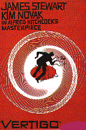

|
Hitchcock, la légende du suspense |
|

|
 Vertigo (1958)
John Ferguson dit "Scotty" (James Stewart) un ancien policier souffrant de vertige (vertigo) revoit un des ses anciens ami Gavin Elster qui lui propose d'enquêter sur sa femme, Madeleine (Kim Novak) qui semble perdre la raison. Celle-ci est en effet fascinée par sa grand-mère, Carlotta Valdez une femme célèbre à San-Francisco disparue tragiquement. Scottie rencontre Madeleine et tombe immédiatement amoureux d'elle. Lorsque celle-ci fait une tentative de suicide (pour imiter Carlotta morte par suicide), il la ramène chez lui. Madeleine emmène ensuite Scottie à la mission espagnole ou Carlotta Valdez est enterrée. Une fois sur les lieux, elle monte dans le clocher et se jette dans le vide. Incapable de la suivre à cause de son vertige, Scottie ne peut rien faire pour la sauver... En proie à une forte déprime, Scottie erre dans San Francisco et rencontre par hasard une jeune employée de bureau un peu vulgaire - Judy - qui semble ressembler fortement à Madeleine. Il la suit jusque dans sa chambre et finit par la séduire, l'obligeant à s'habiller et se coiffer de la même manière que Madeleine. Mais tout cela n'a rien du hasard. Judy était en fait complice de Gavin Elster pour se débarasser de sa femme. Sachant que Scottie n'irait pas en haut du clocher, Elster avait jeté sa femme déja morte faisant ainsi croire à un suicide... Judy commet l'erreur de mettre un soir un des bijoux de Madeleine (le pendentif de Carlotta) et Scottie découvre la supercherie. Pour confondre Judy, il l'emmène de nouveau à la mission espagnole, parvient à grimper en haut du clocher avec elle et lui fait avouer sa complicité. C'est alors qu'une nonne sugit dans le chocher, prise de panique, Judy tombe dans le vide au même endroit de Madeleine...
Un des plus beaux films d'Hitchcock, adapté du roman des français Pierre Boileau et Thomas Narcejac intitulé D'entre les morts. Hitchcock aurait tourné Vertigo après avoir désespérément tenté d'obtenir les droits sur Celle qui n'était plus , le premier roman de ces mêmes auteurs. Pour la petite histoire, ce même premier roman fut adapté par Henri-Georges Clouzot sous le titre Les diaboliques. James Stewart Stewart interprète merveilleusement ce détective angoissé par son infirmité (le vertige) et Kim Novak est superbe tantôt en femme du monde, tantot en garce vulgaire. Le générique (musique de Bernard Herrmann) est très original pour l'époque et Hitchcock utilise tout le long du film de nombreux effets de lignes fuyantes pour appuyer le vertige. Les cauchemards de Scottie
après la mort de
Madeleine sont des morceaux d'anthologie.
Le dénouement est extrêmement symbolique: une nonne apparait dans le clocher comme le messager du jugement divin. Elle provoque la mort de Judy qui tombe du clocher comme Madeleine l'a fait quelques mois plus tôt.
Notons également la présence de Barbra Bel Geddes qui incarne
l'ancienne fiancée de Scottie et qui sera célèbre plusieurs années
plus tard pour son rôle de la maman du clan des pétroleux de la
série DALLAS. |
 Sueurs froides
Sueurs froides